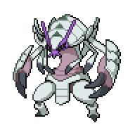

Terajuma Island
Terajuma Shore

| Item | Location |
Fresh Water |
Next to the Passho Berries on Terajuma Shore, right side |
Soda Pop |
Near the bridge on Terajuma Shore, right side |
Grass Gem |
On Terajuma Shore, left of the entrance to the jungle |
After you talk to Melia, a purple fog will wash over the ship. Watch the cutscene play out, and you'll find yourself crashing into Terajuma Island with Saki flying away from the force of impact. Two rangers will come inspect, and battle you thinking you are part of Team Xen.
Pokemon Ranger Sam & Pokemon Ranger Alex
|

Golisopod, Level 37 |
Water | First Impression |
Pelipper, Level 37 |
Water | Hydro Pump |
|---|---|---|---|---|---|
| Sucker Punch | Hurricane | ||||
| Bug | Aqua Jet | Flying | Roost | ||
| Swords Dance | Protect | ||||
|
Machamp, Level 38 |
Fighting | Dynamic Punch |
Ampharos, Level 38 |
Electric | Thunder |
| Rock Slide | Signal Beam | ||||
| Bulk Up | Thunder Wave | ||||
| - | - | ||||
Reward:  3344 3344
|
|||||
This isn't a particularly difficult battle. Pelliper will set up rain so that Golisopod and Ampharos have boosted moves, but otherwise they won't be hitting too hard. Plus, its a 6v4 so there's plenty of ways to simply out muscle their team, as long as you're careful of Golisopod's priority moves. Once you defeat them, Melia and co will explain that we're not Team Xen, and we'll be able to pass through Terajuma Jungle to Kakori Village.
Before we head off, you can enter the building here to shop
 around. I would suggest buying a few Spice Powders if you have the extra cash. You can also grab the Passho Berries
around. I would suggest buying a few Spice Powders if you have the extra cash. You can also grab the Passho Berries growing here and plant some extra berries for later. Along the beach, interacting with Pyokumuku
growing here and plant some extra berries for later. Along the beach, interacting with Pyokumuku will allow you to catch one. I strongly suggest getting one, as it is very helpful in a few of the fields that we will be faced with soon. As a point of note, leveling up Charjabug on Terajuma Island will evolve the Pokemon into a Vikavolt. If you need to heal up, the Battleship is located inside the pier on the left side of the shore. You can now go ahead and follow the group into the jungle when you're ready.
will allow you to catch one. I strongly suggest getting one, as it is very helpful in a few of the fields that we will be faced with soon. As a point of note, leveling up Charjabug on Terajuma Island will evolve the Pokemon into a Vikavolt. If you need to heal up, the Battleship is located inside the pier on the left side of the shore. You can now go ahead and follow the group into the jungle when you're ready.
Terajuma Jungle

| Item | Location |
Grass Gem |
In Terajuma Jungle, left of the entrance from Terajuma Shore |
Sitrus Berry |
In Terajuma Jungle, first area right side |
Inside the jungle, we'll find that there are vines blocking the direct route to Kakori Village. After some experimentation, the group will realize we'll have to take the long way round. Head left into Deep Terajuma Jungle and then along the path into the cave. We'll need to be able to use Surf, which means we need one more badge. Valarie will allow us to battle her for the badge, and the group will head back out of the cave and prepare the field.